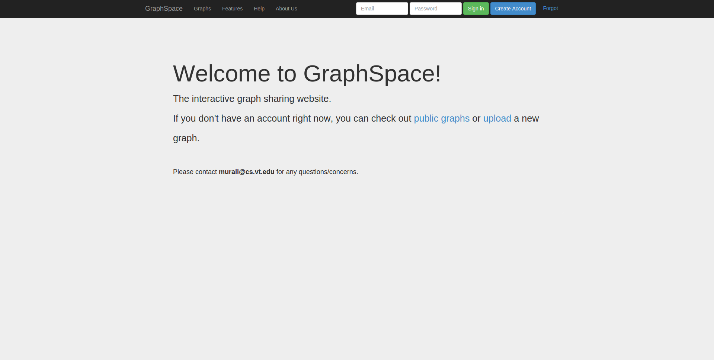
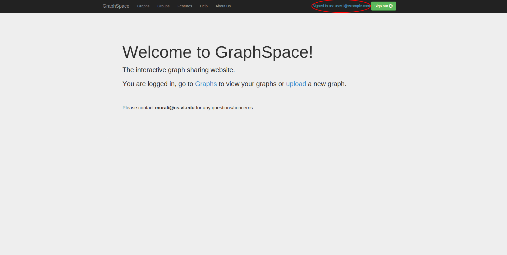
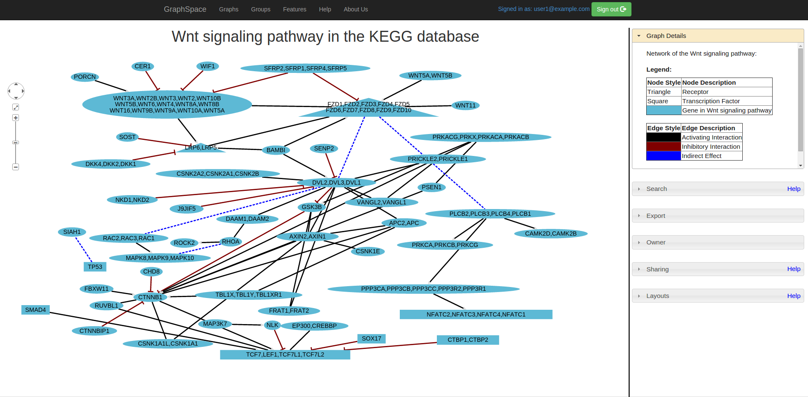
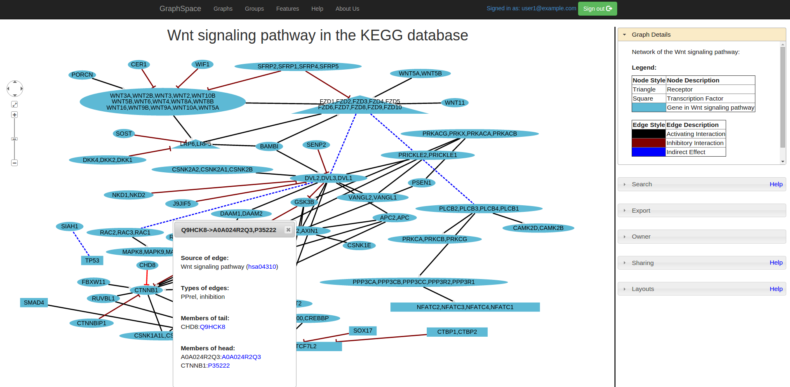
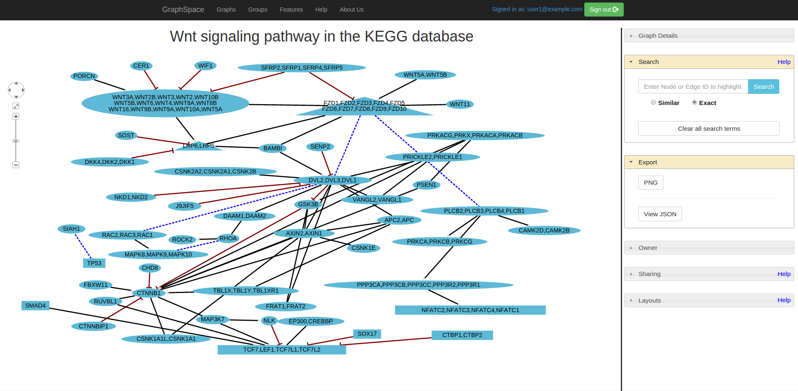

Logging In
The welcome page greets a user when the user visits GraphSpace. We assume that the user has already created an account and uploaded graphs via the upload page or the RESTful API.

The user logs in and is provided a link to the list of graphs that the user can access.
Clicking on the link titled "Graphs" takes the user to a page that lists the graphs accessible by the user. In this example, this user owns 33 graphs and can access public graphs. No graphs are shared with this user.

Searching within Multiple Graphs
The user searches this list for graphs that contain the protein CTNNB1 (the symbol for β-catenin, a transcriptional regulator in the Wnt signaling pathway) obtaining a reduced list of graphs. The selection of the button "Similar" means that the any protein whose label or identifier contains "CTNNB1" as a substring will match this search. This image shows the result of this search. There are six graphs owned by the user and two public graphs that contain this protein. Each link in the "Graph Id" column will take the user to a specific graph with the search term highlighted.

The user clicks on the graph with the id "KEGG-Wnt-signaling-pathway" and reaches the graph for the Wnt pathway with the searched node highlighted.

Searching within a Single Graph
The same search interface greets the user on the page for this graph, which allows the user to add more search terms for nodes (Wnt in this example).

The user can also add search terms for edges ("Wnt:Fzd" in this example). Since the user has selected the "similar" option for the search, any edge whose tail node identifier or label contains "Wnt" and whose head node identifier or label contains "Fzd" matches the query.

By selecting an "Exact" option, the user can perform a new search for nodes that are an exact match to the query, which is "BAMBI" in this figure.

Figure 9: GraphSpace also supports exact searches for edges.

Interacting with a Graph
As its name suggests, the "Graph details" panel displays information about the entire graph, e.g., a legend of node and edge shapes and colors.
Clicking on a node pops up a panel with information on that node.

Clicking on a edge pops up a panel with information on that edge. The information that appears in "Graph Details" and the pop-up panels must be included in the JSON for the graph uploaded by the user using the RESTful API.
A user can export a graph in PNG format and view the JSON string for the graph. GraphSpace does not support any other export formats since it relies on Cytoscape.js for this functionality, which implements only export to PNG format.
Automatic and Manual Layouts
The layout panel for a graph displays two alternatives: automatic and manual.

Clicking on the first choice reveals the name of layout algorithms supported by GraphSpace through its use of Cytoscape.js.

Clicking on the "Manual" tab shows that there are two "Private" layouts, meaning that the user has not yet shared them with any other user. The user has created them in earlier sessions by manually modifying the positions of nodes and edges created by some automatic layout algorithm and saving the layout. The icons next to each layout name provide (i) a direct link to this layout, (ii) allow the user to change its name, (iii) share it with other users who have access to this graph, (iv) delete this layout, and (v) make it the default layout, i.e., instruct GraphSpace to display this layout whenever a user visits the page for this graph.

The user selects to view the layout titled "manual-top-to-bottom".